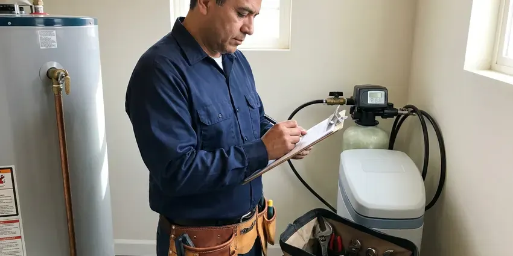

Drainage Services in Wentzville, MO
Slow drains or a backed-up sewer in Wentzville, MO? FGV Plumbing clears it and runs a camera to check the line.
- Fast Drainage Repair
- Quick Local Service
- Work Guaranteed
- Certified Plumbers

Dependable Drainage Service in Wentzville, MO.
We find out why water is backing up or pooling and give you a written plan.
Licensed Drainage Plumbers in Wentzville, MO
FGV Plumbing sees drainage problems in two forms: buildup inside the pipes, and storm water outside that has nowhere to go. Severe thunderstorms and heavy rain can cause flash flooding across Missouri, especially along rivers and in low-lying neighborhoods. We size yard drains and downspout lines for the heavy storms, not the average rain, so they keep up when it matters. Small pipes overflow.
Work we handle every week:
- Hydro jetting for grease and scale
- Drain cleaning and clog clearing
- Downspout tie-ins, dry wells and grading fixes near foundations

Additional Plumbing Maintenance Services in Wentzville, MO
Our maintenance and specialty plumbing services in Wentzville, MO protect your home year-round and extend the life of every system.




Residential Plumbing Service in Wentzville


Customers
Why Choose FGV Plumbing for Drainage Services in Wentzville, MO?
Workmanship shows up years later. Properly bedded sewer pipe keeps its slope. Pipe set on loose fill sinks into a belly, so we bed it and compact the backfill.
- Whole-Property View, We trace water from the roof and fixtures all the way to the street or a dry well.
- Right Equipment, Cable machines, jetters, cameras and locators let us fix the cause instead of guessing.
- Indoor and Outdoor, From a single clog to a full yard drain, we do the work.
Citywide Coverage
We cover every neighborhood in Wentzville and the nearby communities for both drains and yard drainage. Trip charges stay flat. A main line clearing on the far edge of town costs the same as one around the corner, and our trucks carry the same jetters and cameras wherever they are sent.
Experienced Team
Each FGV Plumbing plumber is licensed and trained on jetting and camera equipment. Training never really stops. Jetting old cast iron or thin-wall clay takes judgment, because the wrong nozzle or too much pressure can do damage, so our technicians camera the pipe first and adjust the setup to what they see.
Safety-First Approach
Drain work in Wentzville follows the adopted plumbing code and any local rules on discharge. Storm water stays out of the sewer. Yard drains go to legal outlets, and sewer work gets a permit where required.
Trusted Certified Wentzville Plumbing Services Professionals
At FGV Plumbing, we are proud to offer certified plumbing services throughout Wentzville, MO. Those papers on the wall mean something. Every repair, install and maintenance visit follows strict safety and quality rules, and the plumbers doing the work carry recognized industry credentials.
Call Us Now PHCC Plumbing Contractor Recognition
PHCC Plumbing Contractor Recognition Better Business Bureau (BBB) Accreditation
Better Business Bureau (BBB) Accreditation Angi Certified Pro
Angi Certified Pro ISO 9001 Quality Management Certification
ISO 9001 Quality Management CertificationReliable Drainage Services in Wentzville, MO
Sewer Line Repair & Replacement in Wentzville, MO
Sewer laterals fail from roots, settling, or plain age. Clay and cast iron lines from older homes crack at the joints, and roots find those cracks within a few seasons. After a camera inspection, we locate the damage and price spot repair, replacement or lining. You pick.

Jetting for Scale and Grease in Wentzville
Jetting uses water at high pressure to strip a pipe back to its original diameter. Groundwater from limestone areas is especially mineral-heavy, which makes softeners and regular water heater flushing worthwhile. Mineral scale and grease build up on pipe walls over years and catch everything that goes down the drain, so a cleaned pipe stays clear much longer than one that was only cabled. Most jetting jobs take two hours.
Downspout and Roof Drain Solutions in Wentzville
Gutters concentrate a lot of roof water into a few points, often right next to the foundation. Limestone and rocky ground in the southern part of the state can make digging for sewer lines slower and more costly. Underground downspout lines carry roof water to a pop-up emitter or dry well, with a cleanout for flushing. An inch of rain on a 1,000 square foot roof sheds roughly 600 gallons. That is a lot of water.
Commercial Drainage Solutions in Wentzville
Businesses in Wentzville can lose a day of sales to one backed-up floor drain. Floor drains, grease lines and lot catch basins get serviced before or after business hours. Jetting on a schedule prevents most emergencies.
Main Line and Sewer Drainage in Wentzville, MO
Water coming up in the tub when the washer drains is a classic main line symptom. Backups show up first at the lowest drain. We clear the line through the cleanout, camera it, and if roots or a belly caused it, show you where and how deep it is so you can decide between maintenance and repair.
Outdoor & Storm Drain Cleaning in Wentzville
Area drains, catch basins and driveway trench drains fill with leaves and silt. A buried grate sends water across the yard, and the pipe under it fills with mud. Basins get cleaned out and the pipe gets jetted. Fall cleaning helps most.
Sump Pump Services in Wentzville, MO
A sump pump protects a basement or crawlspace from groundwater. Our test covers the float, the check valve and the discharge line. Discharge must go outside. Many sump floods come from a blocked discharge line, not a dead pump.

Sink, Tub and Toilet Drain Clearing in Wentzville
Kitchen sinks clogged with grease and bathroom drains slowed by hair make up most of our fixture calls. We pull the trap when we can. Toilets get a closet auger, and if that fails, we pull the toilet and clear it from the flange.
Drainage Services Near Me in Wentzville, MO
Water backing up a drain or flooding a yard calls for a crew that is already nearby. Our trucks are close. In a storm, we clear basins and pump low spots, then return to plan a permanent fix once it dries.
A drainage company down the road from you knows how the neighborhood was built. Older blocks often have clay laterals and shared cleanouts. Newer tracts tend to have PVC sewers and flatter yards with rear-lot swales that get filled in by landscaping, which sends water toward the house. We know both.
FGV Plumbing at a Glance
- Fully licensed plumbing team covering Wentzville, MO
- 24/7 emergency service with same-day scheduling
- Upfront, flat-rate pricing before work begins
- 4.9-star rated by 307+ Missouri customers
Wentzville Map
Wentzville Information
- Population
- 47,497
- Area codes
- Local
- Service area
- Wentzville and communities within 40 miles
- Nearby
- O'Fallon, St. Peters, St. Charles, Chesterfield
Drainage in Wentzville, MO needs to be sized for the big storms. Severe thunderstorms and heavy rain can cause flash flooding across Missouri, especially along rivers and in low-lying neighborhoods. Pipe and drain sizes are picked with that in mind.
Talk to a Plumber
Reach out to FGV Plumbing for honest, reliable plumbing from people who know the trade in Wentzville, MO.
Our Specialized Plumbing Services in Wentzville, MO
At FGV Plumbing, you get every kind of plumbing service from one company across Wentzville, MO. From leak detection to full system installs, our team works fast and charges fair prices on homes and commercial properties alike. Take a look at our core services below:


Our Drainage Process in Wentzville, MO
We keep drainage work tidy and quick, with a clear price up front.
Request a Quote
Call (816) 330-2338 to book a drain visit. We confirm the time by text.
Diagnosis
A licensed plumber assesses the drain, often with a camera, and explains the fix.
Clear the Line
We cable or jet the drain based on what we find, then test the flow.
Frequently Asked Questions About Drainage Services in Wentzville
Most basic drain clearing in Wentzville, MO runs $150 to $500. A main line costs more than a sink. Hydro jetting runs higher than cabling because of the equipment and time, and sewer line repair can range from about $1,500 for a spot repair to well over $8,000 for a full replacement with digging.
They solve different problems. French drains handle water moving through soil. Channel drains catch surface water on concrete, and plenty of yards need both.
Store-bought cleaners rarely clear a real clog. They often make it worse. The chemicals sit in the trap, heat up and can damage older pipe or soften glue joints, and if the clog does not clear, the plumber now has to open a trap full of caustic liquid. A hand auger is the better tool.
Simple downspout extensions are a reasonable DIY project. French drains are harder. A French drain or dry well needs correct slope, the right fabric and stone, and an outlet that will not dump water on a neighbor, and digging without an 811 locate risks hitting a gas or power line.
A typical French drain or downspout system takes one to three days. Bigger jobs take longer. Projects with dry wells, long trench runs, or concrete that has to be saw-cut for a channel drain can take most of a week, especially if the ground is too wet to dig cleanly the first day.
We advise against it. Caustic cleaners can soften old PVC joints and eat at cast iron and metal traps. They also rarely clear a full blockage, and when they fail, the plumber has to work around a trap full of caustic liquid that can burn skin and eyes, which slows the job and raises the risk.
Call when more than one drain is slow, or when a toilet gurgles while the washer drains. That usually means the main line. Outside, call when water stands in the yard for more than a day after rain, when a downspout overflows the gutter in every storm, or when water shows up in the crawlspace or basement after a heavy rain.
Drain cleaning usually means a cable machine with a cutting head that bores through the clog. It works fast and costs less. Hydro jetting uses high-pressure water to scrub the whole pipe wall clean of grease, scale and roots, so it lasts longer but costs more and needs a pipe that is in good enough shape to take the pressure.
What People Are Saying About Our Plumbing Experts?

Monica A.
Our water bill nearly doubled in one month with no change in how we used water. The tech checked the meter, heard the leak under the hallway with his equipment, and opened a hole about a foot square. Fixed the same day.
Slab Leak Repair · St. Charles, MOSofia M.
Two new toilets went in during one visit. The tech set them on new wax rings and swapped the old supply lines. He also noticed our bathroom faucet dripping and replaced the cartridge while he was there. No mess left behind.
Toilet Installation · Chesterfield, MO
Diane F.
My kitchen faucet had dripped for months and I finally got tired of hearing it at night. FGV Plumbing came out the next morning, replaced the cartridge and the O rings, and tightened a loose base that was letting water under the sink.
Faucet Repair · Wentzville, MO
Greg S.
I manage a small strip center with six tenants. FGV Plumbing handles our annual backflow testing and fixed a recurring clog in the shared sewer line that had been backing into the nail salon. Their reports come in clean and on time.
Commercial Plumbing · Ballwin, MOPatricia H.
We had a slab leak that two other companies could not find. FGV Plumbing located it in under an hour with a listening device. They rerouted the line through the attic instead of breaking up the floor, so we kept our kitchen tile.
Slab Leak Repair · St. Peters, MO
Lisa C.
Water was pouring out from under the washing machine on a holiday weekend. FGV Plumbing talked me through closing the valves over the phone and had a plumber at the house within ninety minutes. It was a burst fill hose.
Emergency Plumbing · Wildwood, MO